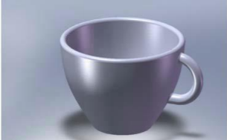
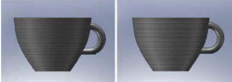
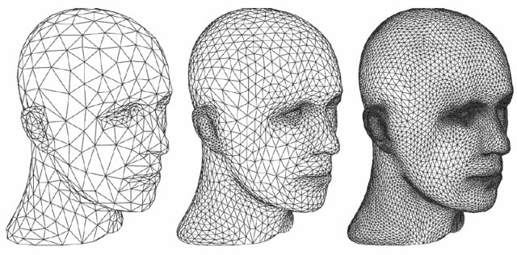
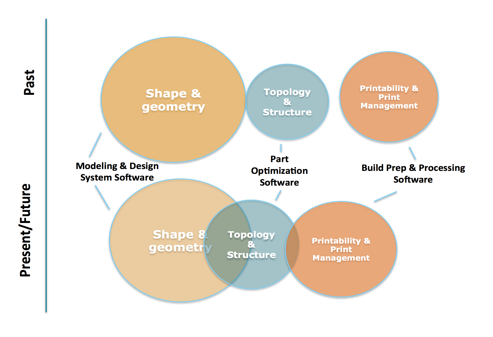
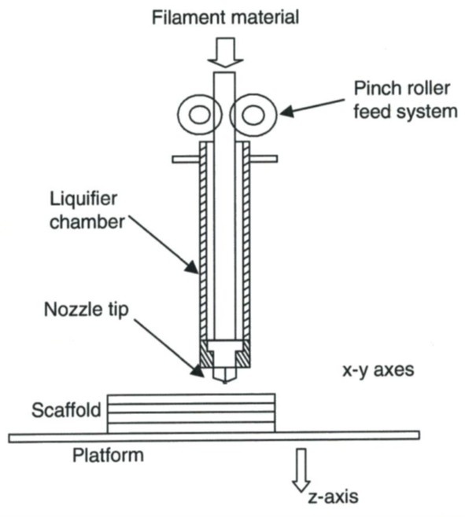

La Fabrication Additive (FA par la suite), plus communement appelée impression 3D, est une révolution pour l'industrie. Bien que certains concept sont apparus dès les années 1900, les progrès technologiques permettent aujourd'hui à l'industrie et au particulier d'aborder ces techniques. Cependant, les premières définition normatives arrivent dans les années 2000, avec par exemple la définition de l'ASTM :

Modélisation CAO d'un tasse à café

Définitions des couches d'impression pour différentes épaisseurs
Dans de larges domaines, les technologies développées permettent de nombreux avantages, dont voici les principaux :
La FA est un processus « rapide » de manufacture
Elle réduit drastiquement le nombre d’étape d'un processus de fabrication.
Elle réduit également le nombre de ressources nécessaires.
C'est un processus simple.
Elle allège les prix globaux (Temps de production, réduction du buy-to-fly ratio).
Elle permet la résolution d’anciens problèmes associés aux méthodes de production classiques.
Elle a la capacité de fabriquer des composants multi matériaux.
Les pièces proposées sont personnalisables.
La fabrication additive et ses logiciels
Toute fabrication additive est aujourd'hui composée de 8 étapes indépendantes.
Conceptualisation et CAO
Conversion en STL
Transfert aux imprimantes et manipulation de STL
Paramétrage de la machine de fabrication additive
Fabrication
Enlevage
Post-process
Application
Les quatre premières étapes sont des étapes logiciels, dont voici le détail et leurs enjeux :
Conceptualisation et CAO : Cette étape comprend la construction du modèle 3D à partir d'une idée de design, qui répond aux exigences de fonction et d'apparence.
Conversion en STL : Le modèle 3D est convertit en un format standard, le STL, pour STereoLithography, inventé par 3D System. Cette conversion est généralement automatique et réalisée par les logiciels de CAO. La correction des erreurs de convertion peut se faire par des logiciels de réparation des STL, Materialise MAGICS par exemple.

Visualisation d'un fichier STL et des facettes par lesquelles le volume est représenté
Transfert aux imprimantes et manipulation de STL : le bon fonctionnement de l'importatin est vérifié, la pièce est orientée et localisée (réglagle de l'origine).
Paramétrage/programmation de la machine de fabrication additive : Les différents paramètres sont appliqués (Epaisseur des couches, vitesses, puissance, distance d'impression, fonctions de remplissage, etc...
Différents acteurs du marché du logiciel 3D pour fabrication additive
Historiquement, ces acteurs se sont développés en se consacrant sur une étape du processus. Par exemple, Solidworks s'est d'abord développé pour la CAO uniquement. Aujour'hui, une nouvelle tendance emerge, les solutions all-in-one. Ces solutions intégrées permettraient, à terme, de réunir les 4 étapes logiciel de la fabbrication additive sur une seule plateforme. Si l'avantage commercial visé par les gros acteurs est certain, de telles platerformes représenteraient un sérieux atout pour l'ingénieur de demain.
Sur le modèle de l'intégration de la simulation numérique dans les étapes de conception, le plus souvent par des modules d'analyses statiques, dynamiques, ou multiphysiques, les acteurs aimeraient saisir et intégrer les contraintes de la fabbrication additive dès les premières phases des projets des bureaux d'étude d'aujourd'hui.

Nouvelle tendance des logiciels 3D
Focus sur l'extrusion de matière
Dans le cadre de cette veille trechnologique, un focus sur les technologies à extrusion de matière est proposé.
Définition : Les systèmes à extrusion de matière sont des systèmes de fabrications additives dans lesquels la matière est dispensée spécifiquement (localement) à travers un orifice ou embout.
Les sytèmes à extrusion de matière travaillent principalement des polymères et des tissus biologiques. La matière première est forcé à travers l'embout par pression, et son extrusion de fait dans un état semi-solide. Pour former une pièce unique, la matière doit se solidifier en gardant sa forme, et se lier à la matière précedemment deposée et déjà solidifiée.

Schéma d'un système à extrusion de matière
Le détail du fonctionnement de cette technologie permet d'en souligner les paramètres de mise en oeuvre :
Le matériau est chargé puis liquéfié en chambre si besoin. Il peut être introduit sous forme de pastille, de poudre ou de filament.
Lors de l'extrusion, la pression de l'extrusion et sa vitesse peuvent être paramétrées et suivies pour contrôler l'épaisseur de chaque couche.
Lors de la solidification, la rétractation du matériau et les contraintes thermales résiduelles influent sur la forme et la taille du matériau extrudé.
Le contrôle de la position de l'embout se fait par la définition d'une trajectoire au préalable.
Le paramétrage de la fusion du matériau est essentielle car. En effet, une chaleur insuffisante causerait un manque d'adhérence inter- et intra-couches et pourrait provoquer des fractures dans la pièce. Au contraire, une chaleur trop importante entraine une trop grande fluidité du matériau et une pauvre définition de la pièce à réaliser.
Tous ces paramètres doivent être pris en compte pour obtenir une pièce satisfaisant des exigences fonctionnelles. Aujourd'hui, les imprimantes par extrusion de matière offrent un contrôle plus ou moins limité sur ces paramètres. Souvent, dans un soucis d'ouverture vers des publics moins avisés, certains aspects sont imposés ou paramétrés par défaut. De plus, les plages de fonctionnement sont machine-dépendante, c'est à dire qu'une imprimante sera dédiée et optimisé pour une impression paramétrée particulière. Les logiciels dédiés sont alors souvent la solution la plus rapide pour garantir un bon fonctionnement de l'outil de production.
Pourtant, avec l'industriualisation de ces technologies, de nouvelles tendances emmergent, avec notamment l'apparition de "plug-in" de plus en plus nombreux pour des logiciels professionels de CAO.
Des réponses en devenir
Comme évoqué précedemment, les fabricants d'équipement d'origine dévellopent des outils de préparation spécifiques à leur machine, garantissant une intégration maximale et une utilisation optimale de leur machine. Une nouvelle tendance semble cependant se dégager, avec les leaders CAO cherchant à introduire des options « Direct to 3D print » dans leurs logiciels comme avantage compétitif et commerciaux.
Pourtant, l'opposition de ces deux modes de conception a vu emmerger une nouvelle gamme de logiciels, appelés logiciels tiers, qui se développent pour répondre à la large gamme d’applications et des processus à mettre en œuvre. C’est le marché qui devrait grandir le plus dans les années à venir. En effet la capacité d'adaptation de ce nouveau type de logiciel pourrait permettrent un accès simplifié aux différentes technologies d'impression 3D, sans brider les concepteurs.
Cette veille sera poursuivie par la conception d'un outil d'aide à la décision quant au choix d'un logiciel d'impression 3D. Celui-ci devrait se présenter sous forme d'un questionnaire opensource, où les sorties (les recommandations) évolueraient constamment, pour rester à jour. A terme, cet outil pourrait intégrer une fonctionnalité d'aide au choix d'une technologie d'impression 3D et de paramétrage.